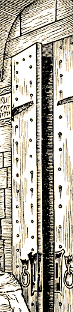

An Evening at Chez Skoot – Proxes Part 1: ConsentA complete stranger walks up, hugs, and kisses you square on the lips. What!?! How did they do that!?! Easy, the stranger just told the computer that he did. While a degree of friendliness is very nice and community building, entirely unchecked it, can also invite unwanted attention. The Skotos system is designed to help players select who they associate with and how. Let's climb into the somewhat clammy skin of Vlad, a young vampire. He's a snappy dresser and popular with the ladies, but his non-beating heart is held by only one girl, the lovely Miss Borgia. Tonight he's getting together with Miss Borgia, along with two mutual friends, TJ Toreau and Red Sawnya. Vlad and Miss Borgia have set their friends up on a blind date. See No Evil Early in the evening, Vlad goes to meet his girlfriend and friends at Chez Skoot. He enters the restaurant lobby, and walks up to the podium to check in with the hostess. Looking through the doorway into the restaurant, Vlad glances into the room. He notes various groups talking at different tables; but he can't make out what they are saying to each other without straining to listen in. From here, if he studied the groups, he could discover his friends, but it's easier to walk into the restaurant. He knows his friends are here because his known list flags them when he enters the room. > Enter Restaurant This is a request requiring Vlad to enter Miss Borgia's close proximity, and requires her approval. This action sets off a timer that ticks down five seconds to either Deny/Accept/Return/Counter. The default reaction is Deny. Accept is a simple acceptance and the act goes forth, Return responds to the action in kind, Counter takes advantage of being inside a close proximity to perform another close proximity act, typically that of obvious rejection. [5... 4... 3... 2...] Miss Borgia could take this opportunity to move away, but she is Vlad's girlfriend, and doesn't want to go anywhere, so she Accepts. You kiss Miss Borgia on the cheek. Miss Borgia grins at you pleasedly. Vlad is already inside Miss Borgia's "close prox" space; thus she has, by accepting the kiss, given him permission for any "close" interactions. Thus there is no delay in sitting next to her. Now Vlad is positioned to settle in for the evening, next to his lady love. Vlad curls his arm around her waist, and holds her . They both settle in for one of TJ's famous yarns. Hear No Evil Our other "couple" however, is not nearly so settled or so comfortable. Let's see how the blind date between TJ & Red Sawnya is progressing. TJ Toreau is a gregarious guy, with his white straw Panama hat perched high on his head, tropical blue tie and rumpled white linen suit, he projects all the charm of a Hawaiian used car salesman. TJ relates story after story of his grand adventures in archaeology. Vlad and his girlfriend, pay polite attention, and are even amused from time to time His story stars himself, his exploits and his heroic deeds; frankly, they are a ghastly bore. Red Sawnya finds herself struggling against the urge to flee, and finally decides to tune him out completely. After five minutes or so, her player goes so far as to use the "Selective Attention" system. This allows her to filter out any dialogue by a selected character or a place such as a table. She could just filter out "mature language" but in this case, the entire content is dreadful, she chooses to eliminate all spoken words emanating from TJ. Meanwhile, confident that he's impressing his date with his tales of daring-do [not noticing that she is entirely ignoring the conversation at the table], TJ is inspired by the coziness of the other couple. Without skipping a beat in his storytelling – he tries to put his arm around Red Sawnya, which like kissing requires close proximity. His "approach" immediately gets her attention. TJ gives a whole new shine on the word sleaze for Red Sawnya and she has six seconds to respond to TJ's advance. She Counters his attempt to get into her "close" prox. She could choose to slap him, or perform another act that requires being near, but instead, not wanting to create a gory scene in front of her two friends, she decides to only use the default, which is to move away. Other players see: Red Sawnya backs away from TJ Toreau. Nonplused, he goes on with his story, shortly interrupted by the arrival of the group's meals. Say No Evil Once commencing with eating, Vlad has to remove his arm from around Miss Borgia. After ten seconds, this breaks their "close" prox. A few minutes into the meal, Vlad offers some of his filet mignon [very rare] to his girlfriend, again this sets off the Deny/Accept/Return/Counter system. She accepts. Later dessert comes and she offers him some of her creme brulee, and once more this sets off the system. After such cuddly flirting all night, Vlad looks into his girlfriend's eyes and realizes she's really the one for him – he changes the setting for her to "Always Accept," then he goes to kiss her. Like always, she's a little ahead of him, and has already changed and refined her own settings. Undelayed this time, she returns his kiss [having set all kisses from Vlad should be Returned, which is more active than just Accepted]. In the mean time, despite one side of the table being populated by the undead, the other side is no more warm. So as to not look too odd by not hearing requests like "pass the salt," Red Sawnya turns her Selective Attention back off to include all members at the table. Still, she looks like a condemned prisoner quietly rearranging her last meal on her plate. Exercising his storied perceptive abilities, TJ judges Red Sawnya's behavior to mean she doesn't like her food. Ever the gentleman, he offers to let her try his. Again the Deny/Accept/Return/Counter system kicks in. Sonya can't help but appear subtly stunned. While she sits, still shocked,, the system automatically defaulted to Deny, thus keeping her safe with no effort on her part. Pleased with his own gracious effort, TJ again continues with his story.... Meanwhile, Sawnya carefully considers the affect of yelling "FIRE!" in a crowded restaurant – then remembers to change her prox settings; she initializes settings for "Always Avoid" for anything related to TJ. She finally relaxes, contentedly knowing she can no longer be accosted while they await the check and the end of the longest evening ever known at Chez Skoot. Touch No Evil It's too bad TJ didn't steal the heart of Red Sawnya, but in his favor, few ever have. Even so, he's a lover not a fighter, and it probably wouldn't have worked out anyway. The good news for her, is with the SkotOS, she can retain her composure, without having to compromise her vow, or challenge him to an unfortunate duel. At the same time, people who really do enjoy each other's company can do so as much or as little as they want, by simply electing to do so [and setting their proximity preferences correctly]. |